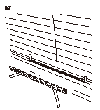

リヤ アンダ モールの交換
NAV.非装備車
インテリア部品、
ボディおよび取外す部品に傷をつけないように作業すること。
リヤ アンダ モールの両端に合わせてリヤ ウインド ガラスにマスキング テープ（A、B）を貼付け、リヤ アンダ モール（C）を取外す。
ガラスに残った両面接着テープをヘラなどで削り取る。
ガラス接着面をホワイト ガソリン、アルコールなどで清掃する。
清掃したガラス面に直接手を触れないようにすること。油脂、水滴、汚れなどが付着した場合は再度清掃すること。
ガラス側の接着面にガラス プライマを塗布し、リヤ アンダ モール（A）の両面接着テープ（B）の離型紙（C）を一部はがして、マスキング テープ（D、E）の位置にセットする。
•
ボディ プライマをガラスに使用しないこと。
•
リヤ アンダ モールは黄色の補助線側を上面にして取付ける。
両面接着テープを完全にはがし、モールを黒セラミック端末（F）に沿って取付ける。
